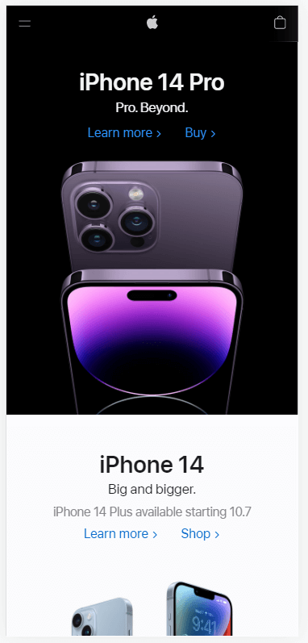

White Space
Apple
www.apple.com White Space & Clean Design is where a page uses it's space that doesn't contain any content to draw focus on the important content. One of the companies that if famous for utilizing this principle is Apple. In this picture there isn't much content but for the content that is there it gives a good chunk of easy to understand information. We know the name of the product, what it looks like, and whether you want to know more about it or buy it. It's as simple as that.
Hick's Law
Walmart
www.walmart.comHick's Law is the relationship to the amount of options and the time it takes for someone to make a selection. In simple and quick situations, the more options there are the longer it takes to make a decision. This can be a good or bad thing. In this example we have Walmart's website. There are handful of things a user can do but they are not overwhelming. Options are to search for an item, reserve pickup or delivery, do some seasonal shoping and more. In this case more time on the site can lead to more sales and there is even a rotating option in the middle of the screen in the live verson of the page which can help users in deciding.
Rule of Thirds
YouTube
m.youtube.comThe Rule of Thirds is in reference to photography where the subject is in 1/3 of the picture and the rest is unused. This rule is more of a guideline but, in the example we can see the rule used a few times. Observe the YouTube page and if you were to imagine it was sectioned off into thirds then you would see that 2 videos use 1/3 of the of their part of the screen. Contained in their section is the name of the video, a thumbnail and how long the video is. The other parts of the screen can back be added up to be the final third of the screen as well. In the pieces of the final third of the screen you can see some navigation on the top and bottom and even a type of preview for a different video. YouTube made use of all the area on the screen and they impliments the guideline of thirds.